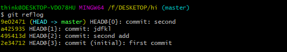
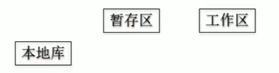
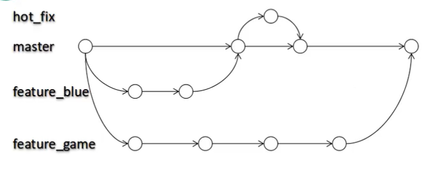
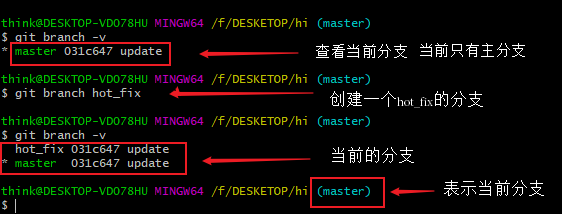
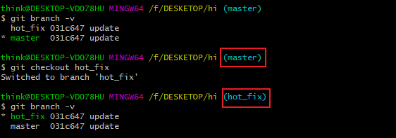
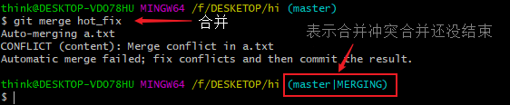

这篇关于github与git的介绍🐒。
前言
git与github是什么？有什么关系？
别看这两个很像，其实两个是完全不同的东西，Git与Github的关系相当于你的汽车和库房的关系。Git是你的车，Github是库房，那么代码就相当于库房里的木头。你伐的木(写的代码)通过装到车（git）才能运到你的库房。这样说就很容易理解了吧！
- github: 存放代码的远程仓库。
- git： 管理github的工具。
Git🛠
基本介绍
- 分布式版本控制工具
工作流程
- 从远程仓库中克隆Git资源作为本地仓库
- 从本地仓库中checkout代码然后惊醒代码修改
- 在提交代码之前将代码提交到暂存区
- 提交修改 -> 提交到本地仓库 ，本地仓库中修改的个历史版本
- 修改完成之后，需要和团队共享代码时，可以push到远程仓库

基本信息设置
1 | // 1. 设置用户名 |
基本命令
1 | // 查看配置 |
将项目提交到github
1 | # 1 本地创建仓库 |
其他操作
1 | ls -lA // 查看当前目录下的文件和隐藏文件 |
VIM编辑器操作
vim是一个文本编辑器，Git自带的。
1 | // 1 打开文件 |
前进后退
查看日志
1 | git log |
1 | git reflog // 完整显示一行 |

操作：
- 索引(推荐)：前进后退
git reset --hard [索引] - ^ : 后退
git reset --hard HEAD^ - ~：后退
git reset --hard HEAD~n
1 | git reset --hard [索引值] //索引值时 |

reset命令的三个参数：
--soft: 本地库移动HEAD指针

--mixed：本地库移动HEAD指针,重置暂存区
--hard:本地库移动HEAD指针,重置暂存区,重置工作区
找回永久删除的文件:
使用git reset --hard [索引值]可以找回删除的文件
比较文件差异
1 | git diff // 比较多有文件 |
git分支(⭐⭐)
相当于复制几份，然后同时开发。各个分支互不影响。

好处：
并行开发多个分支，提高效率
相互独立，一个分支开发失败，不会影响其他分支。
- 查看所有分支
1 | git branch -v |
- 创建分支
1 | git branch hot_fix |

- 切换分支
1 | git checkout [分支名] |

合并：
- 先切换到接受的分支上
- 执行
merge命令
1 | git merge [合并的分支名] |
解决冲突
- 编辑文件删除特殊符号
- 修改文件修改到满意程度，保存退出
git add [文件名]或git add .git commit -m "日志"注意：不带文件名
冲突？两个分支的同一个地方都修改了就会产生冲突？

这时候我们查看文件，文件没合并，我们需要手动修改一下。

修改完，使用git add . git commit提交以下就没有了

Github🎪
基本概念
仓库 （Repository）
- 存放你项目的地方，每个项目都存放一个仓库中
收藏(Star)
- 收藏项目的人数
复制和克隆(Fork)
- 复制别人的仓库到我的账号下创建一个新仓库
- 独立存在的
发起请求(Pull Request)
- 基于fork的，你在别人的项目上做了改进、行把他合并这时候可以发请求
- 发起人觉得不错、这是可以合并
关注(Watch)
- 关注项目，当项目更新时可以接收到通知
事物卡片(Issue)
- 发现代码BUG,但是目前没有成型代码，需要讨论时用
注册
注册
验证邮箱(收不到邮箱上设置白名单)
提交基本流程
- 初始化本地库
- github上创建一个仓库
- 与远程库连接
git remote add [github仓库地址]- 查看
git remote -v
- 查看
- 推送
git push origin [分支名]
克隆基本流程
- 克隆：远程库下载到本地，创建origin远程地址别名，初始化本地库
git clone [仓库地址]
pull
代码将从远程拉去到本地并与本地的分支进行合并，所以pull = fatch + merge
fatch
抓取远程库
git fatch origin [分支名]次不会改变本地工作区的文件
切换到从远程下载的分支
git checkou origin/master
merge
本地仓库与远程仓库的合并
- 站在本地
master分支上git merge origin/master